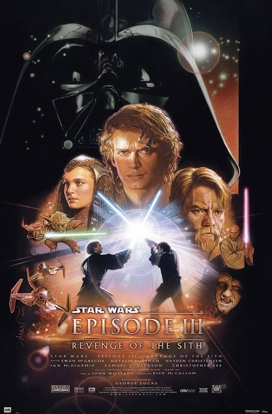

Ce document a été réalisé par MOUTONNET OLIVEIRA Mathys, VALTER Maël, VALENTIN Alix, ROTH Théo
STAR WARS III : La Revanche des Sith
Informations générales :
Année de Sortie :
2005
Réalisateur :
George Lucas
Acteurs Principaux :
Ewan McGregor, Hayden Christensen, Natalie Portman, Ian McDiarmid, Samuel L. Jackson


Genre :
Science-Fiction, Space Opera
Résumé :
L'histoire de cet épisode se déroule trois ans après les événements de L'Attaque des clones alors que la galaxie est enlisée dans un conflit à grande échelle, la guerre des clones. Voyant leur chance de l’emporter s’amenuiser, les forces séparatistes frappent un grand coup, attaquant la planète capitale Coruscant et s’emparent de Palpatine, le Chancelier suprême de la République. Les deux Jedi Obi-Wan Kenobi et Anakin Skywalker se donnent alors pour mission de délivrer le dirigeant républicain, ignorant qu'il s'avère être le seigneur noir Sith Dark Sidious qui manipule les séparatistes. Sous l'influence de ce dernier, Anakin Skywalker bascule progressivement du côté obscur de la Force et devient Dark Vador. Le final du film fait le lien avec l'épisode IV, sorti au cinéma vingt-huit ans plus tôt.
Bande-Annonce du Film
Sources des informations et médias
Nos sources sont : Wikipedia, IMDb
Les images proviennent de : Google